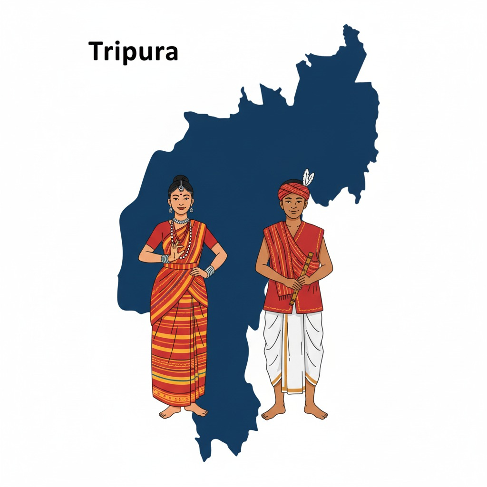

Quick history of Tripura
Tripura, one of India's northeastern states, was once an independent kingdom ruled by the Manikya dynasty for centuries.It merged with India in 1949 and became a full-fledged state in 1972.The state is largely hilly and bordered by Bangladesh on three sides.Tripura experiences frequent floods during monsoons due to overflowing rivers like Haora, Manu, and Gomati.
Landslides occur in hilly areas such as Dhalai and North Tripura during heavy rains.The region lies in Seismic Zone V, making it prone to earthquakes.Deforestation and shifting cultivation (jhum) contribute to soil erosion and disaster vulnerability.In 2024, heavy rains triggered floods affecting thousands in West Tripura and Unakoti districts.

Capital:Agartala
Statehood: 1972
Statehood: 1972
Detailed timeline & preparedness tips
- April 2025 A mild intensity of tremors were felt in Tripura’s Agartala and adjoining areas on Friday. According to updates from the National Centre for Seismology, the epicentre of the quake with a magnitude of 4.0 on the Richter scale was at 24.05 latitude and 91.37 longitude in neighbouring Bangladesh. The quake struck around 4.23 pm.
- Common impacts — damaged roads, washed-away bridges, destroyed crops, temporary sheltering in relief camps, and travel disruption along NH routes (including sections of NH-13 / BCT highway).
- Preparedness tips — keep an emergency bag (food, water, torch, first-aid), register with local disaster authorities, avoid river banks during heavy rain, and follow official evacuation orders.
- How you can help — support verified local relief funds/NGOs, donate through government-endorsed channels, or volunteer through district disaster management teams.